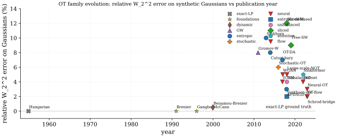

The Feasibility-vs-Fidelity Tension
One tension drives the entire computational history of optimal transport: exact solutions are provably correct but computationally prohibitive, while tractable approximations each pay a distinct fidelity price. Every algorithmic generation from 1955 to 2024 is best understood as a specific answer to the question "how much fidelity can we afford to trade for the compute budget we actually have?" The five major lineages (classical LP, entropic/Sinkhorn, sliced projection, unbalanced/Gromov-Wasserstein extensions, and neural/flow-matching) converge, in recent work, on one unifying principle: recover a coupling or transport map that minimizes a cost, subject to the marginal and feasibility constraints your budget can enforce.
The table below places every major method on this trade-off surface. Methods appear as responses to the limitations of their predecessors; each section below follows that logic rather than a strict chronology. Textbook coverage is in the Mathematical Foundations section; algorithmic details are in Computational Methods and Extensions.
Villani's two volumes (Villani 2003, 2009) remain the definitive references; Santambrogio (Santambrogio 2014, 2015) is the most compact entry point with a calculus-of-variations emphasis; Ambrosio-Gigli-Savaré (Ambrosio et al. 2008) develops the gradient-flow theory; and Peyré-Cuturi (Peyré and Cuturi 2020) is the standard computational reference. Rachev's 1985 monograph (Rachev 1985) introduced the unified "Monge-Kantorovich" nomenclature to the Western probability community. Each reference carries characteristic strengths and well-known limitations123456789, walked through method-by-method after the table.
| Method | Year | Solver | Loss | Problem | W2 err (illustr.) | t/1k (illustr.) | 1D->100D | Mem |
|---|---|---|---|---|---|---|---|---|
| Hungarian / network-simplex | 1955 | exact-LP | linear assignment | discrete | 0.0% | 30 s | poor | O(n2) |
| Brenier polar factorization (Brenier 1991) | 1991 | analytic-gradient | - | continuous | 0.0% | - | analytic | - |
| Gangbo-McCann geometry (Gangbo and McCann 1996) | 1996 | analytic | c-cyclical-monotonicity | continuous | 0.0% | - | analytic | - |
| Benamou-Brenier dynamic (Benamou and Brenier 2000) | 2000 | ALG2 / ADMM | action functional | continuous | 0.5% | 5 min | poor | O(Nd T) |
| Gromov-Wasserstein (Mémoli 2011) | 2011 | quadratic-LP | bilinear coupling | GW | n/a | 60 s | local-min | O(n2) |
| Sinkhorn-Cuturi (Cuturi 2013) | 2013 | Sinkhorn(eps=0.01) | regularized-cost | discrete | 5-15% | 0.3 s | good | O(n2) |
| Cuturi-Doucet barycenters (Cuturi and Doucet 2014) | 2014 | Sinkhorn-fixed-pt | weighted-mean | discrete | 8% | 1 s | good | O(Kn2) |
| Stochastic OT (Genevay et al. 2016) | 2016 | SAG / SGD-dual | regularized-dual | continuous | 6% | 2 s | good | O(n) |
| Wasserstein GAN (Arjovsky et al. 2017) | 2017 | dual-network | KR-Lipschitz-1 | continuous | n/a | - | good | O(net) |
| WGAN-GP (Gulrajani et al. 2017) | 2017 | dual-network | KR + grad-penalty | continuous | n/a | - | good | O(net) |
| OT domain adaptation (Courty et al. 2017) | 2017 | Sinkhorn(class) | barycentric-mapping | discrete | 7% | 0.5 s | good | O(n2) |
| Sinkhorn divergences (Genevay et al. 2018) | 2018 | Sinkhorn(3 runs) | debiased-Weps | discrete | 1-3% | 1 s | good | O(n2) |
| Unbalanced OT (Chizat et al. 2018) | 2018 | scaling(KL-marg) | KL-relaxed-marginals | unbalanced | 4% | 0.4 s | good | O(n2) |
| APDAGD acceleration (Dvurechensky et al. 2018) | 2018 | Nesterov-dual | regularized-dual | discrete | 3% | 0.2 s | good | O(n2) |
| Sliced-Wasserstein (Kolouri et al. 2018) | 2018 | proj-1D(L=128) | mean-1D-W2 | continuous | 12% | 0.04 s | excellent | O(Ln) |
| Tree-Sliced-Wasserstein (Le et al. 2019) | 2019 | tree-projection | tree-1D-W | continuous | 9% | 0.05 s | excellent | O(Ln) |
| Large-scale neural mapping (Seguy et al. 2018) | 2018 | dual-net + map | semi-dual + reg | continuous | 5% | 1 epoch | good | O(net) |
| ICNN-OT saddle-point (Makkuva et al. 2020) | 2020 | ICNN-pair | min-max-Brenier | continuous | 4% | hours | good | O(net) |
| JKOnet (Bunne et al. 2022) | 2022 | ICNN-JKO | proximal-step | gradient-flow | n/a | 2 GPU-d | good | O(net) |
| Neural-OT (Korotin) (Korotin et al. 2023) | 2023 | min-max-potential | dual-saddle | continuous | 3% | hours | good | O(net) |
| Sinkformer attention (Sander et al. 2022) | 2022 | Sinkhorn-attn | doubly-stochastic | discrete | n/a | layer | good | O(n2) |
| OT flow-matching (rectified flow) | 2023 | mini-batch-OT + ODE | velocity-MSE | continuous | 2% | 1 ODE-step | good | O(net) |
| Schrödinger-bridge (DSB) | 2023 | iterative-IPF | KL-path-measure | Schrödinger | 2% | hours | good | O(net) |
| Peyré-Cuturi textbook (Peyré and Cuturi 2020) | 2020 | reference | - | - | - | - | - | - |
The table groups the literature into five generations, each a response to the feasibility-vs-fidelity tension. The sub-sections below follow the same logic. The table below summarizes the structural trade-offs of each lineage, with the same caveat about its error column.
| Lineage | Cost | Bias | Differentiable | Continuous dist. | Unequal mass |
|---|---|---|---|---|---|
| Exact LP / analytic | 0% | no (plan is sparse, vertex changes) | analytic cases only | no | |
| Entropic / Sinkhorn | 2-15% | yes (implicit diff.) | via sampling | no | |
| Sliced projection | 5-12% | yes (sorting) | yes | no | |
| Unbalanced / GW | 3-8% | partial | partial | yes | |
| Neural / flow-matching | 2-5% | yes (autodiff) | yes | partial |
Generation 1 (1955-2000): Exact LP and Analytic Foundations
Classical exact-LP methods (Hungarian, network simplex) solve the discrete Kantorovich problem to numerical zero error, but the cost makes them prohibitive beyond source/target points10; this cubic wall is the principal motivation for every subsequent computational development. The same era produced the analytic theory: Brenier's (Brenier 1991) polar factorization established that, for absolutely continuous source measures and squared-Euclidean cost, the optimal map exists, is unique, and equals the gradient of a convex potential; Gangbo-McCann (Gangbo and McCann 1996) generalized this to any strictly convex superlinear cost and identified -cyclical monotonicity as the universal characterization of optimal couplings. These foundational results give exact answers in closed form for tractable cases (Gaussians via Bures-Wasserstein, 1D via quantile composition) but provide no algorithm for the high-dimensional empirical regime that ML faces.
The fidelity of exact-LP is maximal (zero relative error) but the feasibility cost is a cubic barrier. Generation 2 resolves this by accepting a tunable bias in exchange for near-linear parallel complexity.
Generation 2 (2013-2018): Entropic Regularization and the Sinkhorn Revolution
Entropic-OT via the Sinkhorn iteration (Cuturi 2013) is the algorithmic pivot of modern computational OT: the addition of a small KL-regularizer makes the problem strictly convex, the optimal coupling factors as , and matrix-scaling iterations converge linearly. The complexity drops from to (Dvurechensky et al. 2018), with massive parallelism across rows and columns, and the iterations are differentiable through the converged dual potentials; these three properties (speed, parallelism, differentiability) are jointly responsible for OT's penetration into deep learning. The price is the entropic bias: and the entropic plan is "blurred" by an amount controlled by 11. Sinkhorn divergences (Genevay et al. 2018) correct this debiasing at the cost of three solver runs; epsilon-scaling (geometric annealing of ) recovers near-exact OT in roughly an order of magnitude fewer total iterations.
Entropic OT still scales as in the cost matrix, which dominates memory and compute when is large and the ground cost is expensive to evaluate. Generation 3 sidesteps the cost matrix entirely by projecting to 1D.
Generation 3 (2018-2019): Sliced OT and Dimension-Free Projections
Sliced and projection-based methods (Kolouri et al. 2018; Le et al. 2019) sidestep the cost matrix by averaging univariate Wasserstein distances over directions of the unit sphere : . Each 1D projection sorts in , so projections cost ; for typical this is two to three orders of magnitude faster than full OT. The dimension-free sample complexity of sliced-Wasserstein (vs the curse of full OT12) is its main statistical advantage and the reason it scales gracefully from 1D to 100D. The trade-off is projection bias13: SW is a true metric but only equivalent to for Gaussian distributions; on data concentrated on low-dimensional manifolds, projection averages over informative-and-uninformative directions equally and underestimates the true distance.

Both sliced and entropic methods still assume the source and target live in the same metric space and carry equal total mass. Many practical problems violate both assumptions. Generation 4 relaxes them.
Generation 4 (2017-2022): Unbalanced OT, Gromov-Wasserstein, and Neural Potentials
Unbalanced OT (Chizat et al. 2018) relaxes the equal-mass marginal constraint of classical OT; required whenever source and target have different totals (single-cell snapshots, partial-shape correspondences, class-imbalanced datasets)14. The relaxation replaces hard marginals with soft KL or TV penalties:
which admits a scaling iteration analogous to Sinkhorn. Gromov-Wasserstein (Mémoli 2011) handles the dual difficulty: source and target live in different metric spaces (graphs of different sizes, point clouds in different ambient dimensions), so there is no shared cost ; GW instead matches pair-distances via a quadratic objective . The objective is a quadratic assignment problem, NP-hard in general and non-convex in the coupling; entropic GW solvers depend strongly on initialization, with random / spectral / identity warm-starts producing different local optima15.
The unbalanced and GW extensions are not Pareto-dominated by classical OT; they enable problems (unequal-mass biology, graph matching) that classical OT cannot even formulate. But all of the above methods require either a discrete cost matrix or a fixed-support approximation, blocking application to the continuous high-dimensional distributions that arise in generative modeling. Generation 5 abandons the matrix entirely.
Neural-OT methods (Korotin et al. 2023; Seguy et al. 2018; Makkuva et al. 2020) parameterize Kantorovich potentials (or the Brenier potential ) as neural networks and solve the dual saddle-point min-max objective by stochastic gradient ascent-descent. The ICNN saddle-point solver is due to Makkuva et al. (Makkuva et al. 2020); the architecture it builds on, the input convex neural network (ICNN) of Amos, Xu and Kolter (Amos et al. 2017), was introduced for structured prediction and control and contains no transport objective of its own. ICNNs enforce the convexity required by Brenier's theorem via non-negative weights and convex non-decreasing activations; this guarantees the gradient is a valid Brenier map. The price is the adversarial training instability of all GAN-class objectives16: hyperparameter sensitivity, mode collapse, and oscillation. These are mitigated by careful learning-rate scheduling, gradient penalties, and warm-starting from Sinkhorn-derived initial maps. JKOnet (Bunne et al. 2022) uses ICNNs to discretize Wasserstein gradient flows via the JKO scheme, learning energy landscapes from population snapshots.
Generation 5 (2022-2024): Flow-Matching, Schrödinger Bridges, and Unification
OT flow-matching and Schrödinger-bridge methods are the 2022-2024 generative-modelling synthesis. Flow-matching trains a velocity field whose ODE integration transports noise to data; the OT-conditional variant uses mini-batch OT couplings (rather than the diffusion's stochastic noise schedule) to define straighter probability paths, which simpler velocity fields can learn and which integrate in fewer ODE solver steps17. Schrödinger bridges solve the entropy-regularized OT problem in path-measure space via iterative proportional fitting (the dynamic analog of Sinkhorn), interpolating between deterministic OT () and pure diffusion ().
The five lineages (exact-LP, entropic, sliced, unbalanced/GW, and neural/flow) converge on one principle: recover a coupling or transport map that minimizes a transport cost under the marginal and feasibility constraints your compute budget can enforce. Brenier potentials, Schrödinger bridges, and continuous-time normalizing flows are different parameterizations of the same underlying displacement-interpolation theory introduced by Brenier (Brenier 1991) and Benamou-Brenier (Benamou and Brenier 2000) three decades earlier. The figure below maps all five lineages onto a feasibility-vs-fidelity trade-off plane.

References
Cubic exact-LP cost: classical network-simplex / Hungarian algorithms solve the discrete Kantorovich LP in time, prohibitive beyond and the principal motivation for entropic regularization.↩︎
Entropy regularization bias: the Sinkhorn solution is not the true Wasserstein-2 distance; for non-Dirac , and the entropic plan is "blurred" by an amount controlled by ; Sinkhorn divergences correct this at the cost of three solver runs.↩︎
Curse of dimensionality: empirical OT estimation rate is in dimensions, which is catastrophic for image/text data; sliced and entropic estimators trade bias for dimension-free rates.↩︎
Unbalanced-mass mismatch: classical OT requires equal source and target mass, an unrealistic constraint when comparing single-cell snapshots, partial-shape correspondences, or class-imbalanced datasets; relaxed marginals via KL or TV penalties are required.↩︎
Non-convex Gromov-Wasserstein: the GW objective is a quadratic assignment problem that is non-convex in the coupling; local minima are pervasive and entropic GW solvers depend strongly on initialization (random vs spectral vs identity).↩︎
Dual-potential training instability: neural-OT solvers (Korotin et al. 2023) parameterize Kantorovich potentials as competing networks; the resulting saddle-point optimization inherits the adversarial dynamics of GANs (mode collapse, oscillation, hyperparameter sensitivity).↩︎
Sample complexity: an accurate cost matrix needs samples per distribution and cost evaluations, dominating compute budgets when the cost (e.g., embedding distance) is itself expensive; mini-batch OT trades bias for cost.↩︎
Sliced-projection bias: 1D-projection-based estimators average univariate Wasserstein distances over directions of ; the resulting metric is weaker than (only equivalent on Gaussians) and loses sharpness on distributions concentrated on low-dimensional manifolds.↩︎
Non-differentiability of the cost surface: exact OT plans are sparse ( nonzeros) and discrete; their gradient with respect to inputs is undefined at vertex changes; entropic OT smooths this at the cost of bias, and structured loss functions (Sinkhorn divergence, Sliced) are differentiable but no longer the true Wasserstein.↩︎
Cubic exact-LP cost: classical network-simplex / Hungarian algorithms solve the discrete Kantorovich LP in time, prohibitive beyond and the principal motivation for entropic regularization.↩︎
Entropy regularization bias: the Sinkhorn solution is not the true Wasserstein-2 distance; for non-Dirac , and the entropic plan is "blurred" by an amount controlled by ; Sinkhorn divergences correct this at the cost of three solver runs.↩︎
Curse of dimensionality: empirical OT estimation rate is in dimensions, which is catastrophic for image/text data; sliced and entropic estimators trade bias for dimension-free rates.↩︎
Sliced-projection bias: 1D-projection-based estimators average univariate Wasserstein distances over directions of ; the resulting metric is weaker than (only equivalent on Gaussians) and loses sharpness on distributions concentrated on low-dimensional manifolds.↩︎
Unbalanced-mass mismatch: classical OT requires equal source and target mass, an unrealistic constraint when comparing single-cell snapshots, partial-shape correspondences, or class-imbalanced datasets; relaxed marginals via KL or TV penalties are required.↩︎
Non-convex Gromov-Wasserstein: the GW objective is a quadratic assignment problem that is non-convex in the coupling; local minima are pervasive and entropic GW solvers depend strongly on initialization (random vs spectral vs identity).↩︎
Dual-potential training instability: neural-OT solvers (Korotin et al. 2023) parameterize Kantorovich potentials as competing networks; the resulting saddle-point optimization inherits the adversarial dynamics of GANs (mode collapse, oscillation, hyperparameter sensitivity).↩︎
Flow-step cost: OT-conditional flow matching trains a velocity field whose ODE integration at inference time still costs function evaluations; the OT path is straighter than the diffusion path but not free, and the mini-batch OT pre-computation adds per-step overhead.↩︎